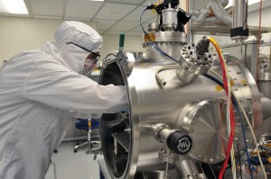

The Scientific Method

The scientific method is a process of discovering things about our world. Scientists use this process to learn new things. Howstuffworks presents a 12 page article explaining the scientific method.
When you review articles on the scientific method you discover that the steps are not always the same. As you look closer they really mean about the same thing and are just presented using different words. Here is a list of the steps of the scientific method that reflects the general process.
Steps of the Scientific Method
- Observation/Question
- Hypothesis
- Prediction
- Testing through experimentation
- Draw a conclusion
- Refine and Repeat
Testing the Hypothesis
One of the important details is that the hypothesis must something that can be tested. Without the ability to test the hypothesis there is no way to draw a firm conclusion. This requirement makes it so some ideas never become theories.
The process can be meaningful when the hypothesis is proven to be wrong as well as when it is proven to be right. In either case something can be learned.
When the testing does not result in what was predicted the ideas are refined based on what was observed and a new hypothesis is created. Here the process is repeated. This process of refining and repeating can lead scientists closer and closer to a hypothesis that can become a theory.
Kids Using the Scientific Method
Kids can learn about the scientific method in many fun ways. Here is a site that has many experiments for kids.
Science Activities for Children
| Activity | Age Range | Time Needed | Rating |
|---|---|---|---|
| Oobleck Science: Solid or Liquid? | First Grade | 40 minutes | 3.8 |
| Firework Science | Second Grade | 20 minutes | 3.3 |
| Frogs In Winter | Third Grade | 45 minutes | 3.7 |
| Layering Liquids: Explore Density Science | Fifth Grade | 25 minutes | 4.1 |
| Create an Ocean in a Bottle | Kindergarten | 30 minutes | 3.5 |
There is so much to enjoy in the world of science. Discovery, learning, and experimenting are interesting ways to develop usable skills that can be applied broadly. Improve your World - Engage with Science.